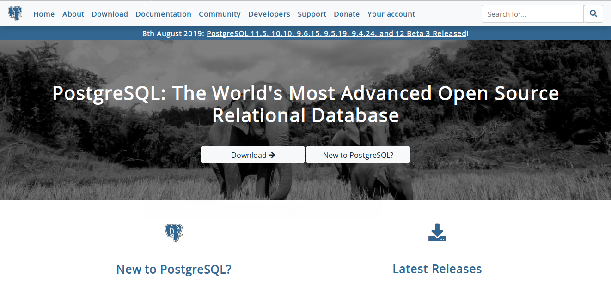
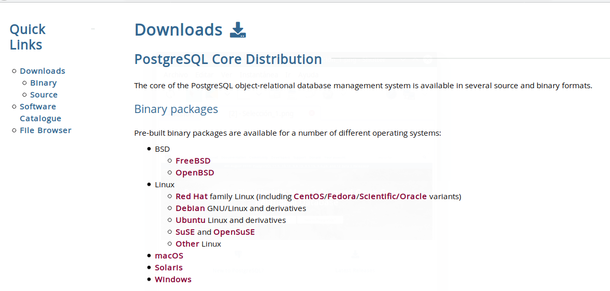
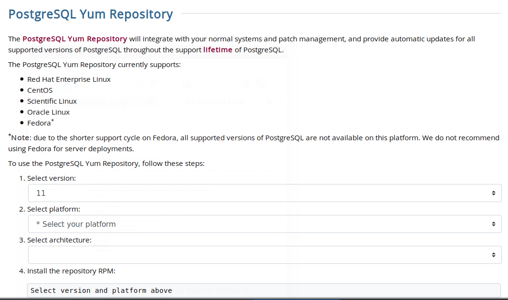

Por medio de su navegador favorito ingrese a la pagina oficial de postgre que es postgreSQL

Una vez dentro dar clic en Download, nos redireccionará y deberemos seleccionar el sistema operativo que estamos usando, en este caso es centOS por lo cual seleccionaremos red hat.

Se recomienda hacer uso de una versión anterior a la actual, para evitar encontrarnos con errores
Los pasos 4,5,6 y 7 se realizarán en la terminal de su sistema operativo centOS.

En la terminal de centOS se instala el repositorio de postgreSQL con el siguiente comando:
# install https://download.postgresql.org/pub/repos/yum/reporpms/EL-7-x86_64/pgdg-redhat-repo-latest.noarch.rpm
# yum install postgresql10
# /usr/pgsql-11/bin/postgresql-10-setup initdb
# systemctl enable postgresql-10
# systemctl start postgresql-10
Para acceder a postgreSQL los comandos son: su - postgres y psql .